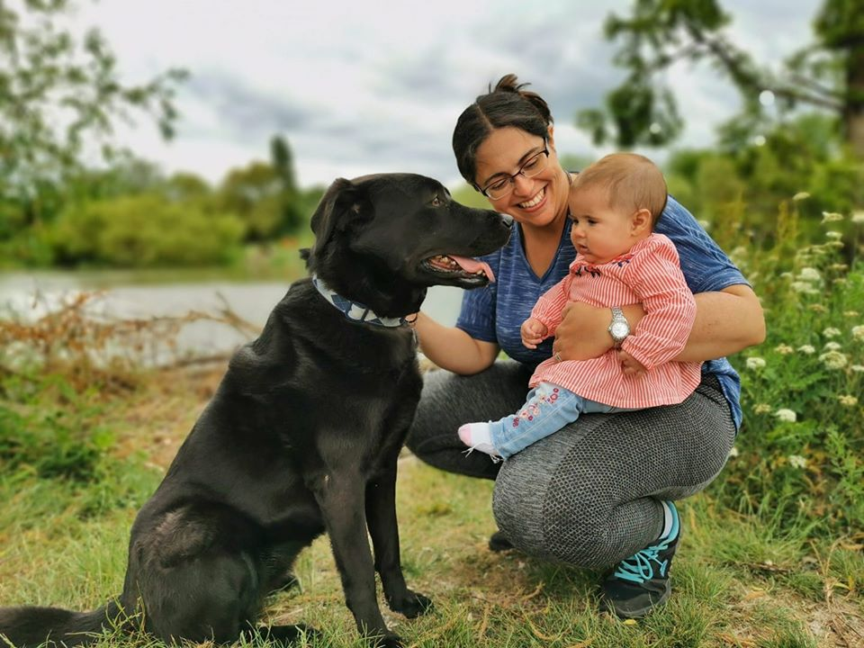

YOUR ANIMALS IN THE BEST HANDS
It brings great sadness to tell you that Pure Pet Passion is no longer in business
Hi everybody! I hope you are all ok and keeping safe in these crazy times. 😊
I have been very disconnected from my website and social media recently, due to not having any guests and having a little one to take care of 😅
Over the last few months I have made a decision which some of you already know... Very sadly, and after lots of thinking, I have decided to stop the business 😔 The two main reasons are Lara and Cassie. When the lockdown is over I want to recover the time with Lara and with this job I am stuck in the house all day, sometimes for full weeks and I want to go out and show Lara the world and make friends. 😊
Most of you know Cassie well and how much of a softy she is... But she also has a strong character which has become a bit more obvious since Lara is here, she is very protective. For a few months before the lockdown Cassie was getting a bit tired, stressed and frustrated with all the dogs coming in and not having the house for herself, and she was becoming quite defensive. In the lockdown I have noticed an amazing change in her. She is happier, calmer and, although she doesn't have so many chances to play, she seems more content. 😊 Some of your babies are very good friends with her so please keep in touch, Cassie would still love to have play dates now and then 😊
I have to put my two girls first... I feel sad, because I love all my guests so much and in the last couple of years some of my clients have become good friends too, but this is the best for my family. I know the friendships will carry on 😊
Since making this decision, I have teamed up with a good friend and I can now announce I am the co-owner of Exotic Explorers, a company that aims to educate young and old about the wonders of exotic animals.
Follow my new venture at Exotic Explorers on our website page at
https://exoticexplorers.co.uk
or check out our facebook page at
@ExplorersMobileZoo
Thank you soo much to everyone who has supported us these last 2 amazing years!
Be safe and see you all soon! ❤️
🐕🐇🐈Pure Pet Passion Team🐀🦜🐍
A LIFE AROUND ANIMALS
Hi, I'm Puri and I have been working with animals for 12 years now and have loved animals for as long as I can remember. My first job with them was in Mundomar Zoo(Benidorm), where I started when I was just 17 years old. I worked with the bird team and birds became the most important thing in my life. I stayed in that job for 8 years as one of the main trainers in the team.
After that I worked in a breeding centre, where I was solely responsible for the wellbeing of the breeding couples, and the breeding and socialisation of birds and small mammals.


Life is unpredictable, and meeting my other half brought me to live in England around 3 years ago, where I found my dream job in Tropical Wings Zoo. I was given the position of Senior Keeper and Main Trainer of not only birds but also a large variety of mammals.
Unfortunately Tropical Wings Zoo closed in 2017 and I decided on a new path. I have always wanted to help people with their own pets but never had the time to spare, but now I dedicate my full time to it.
I can´t imagine my life without animals and I can assure you that they will be not only in the best hands, but also with a good friend.
- Vet Assistant Certificate
- Wellbeing & Enrichment Certificate
- Behaviour & socialisation of different types of animals
- Considerable experience in the husbandry, training and handling of small & big mammals (dogs, cats, rabbits, rats, exotic mammals and more)
- Many years of experience in the husbandry, training and handling of birds (parrots, conures, birds of prey etc.)
- Experience in the husbandry and handling of reptiles (snakes, iguanas, lizards, turtles and more)
- Animal breeding (especially parrots and monkeys)
Training & Experience
SERVICES AND PRICES
In all my services, my main goal is to make your animal feel safe, have fun and be stress free.
AREAS COVERED:
Gallery
{kind=link}
{kind=link}
{kind=link}
{kind=link}
{kind=link}
{kind=link}
{kind=link}
{kind=link}
{kind=link}
{kind=link}
{kind=link}
{kind=link}
{kind=link}
{kind=link}
{kind=link}
{kind=link}
{kind=link}
WHAT DO OTHERS HAVE TO SAY?
We have a French bulldog puppy who is very stubborn and doesn't like to be told no! We started to notice improvement straight away after our first obedience training session with Puri and after just 3 weeks of training he is already like a different dog - he now sits, lays, waits and listens to commands- we cannot believe how fast he has picked things up - Puri is the BEST trainer and dog sitter we have ever come across - you will not meet anyone as passionate and caring towards animals as Puri - highly recommend.
Sophie Hill Bentley, a French Bulldog
I have two male GSD’s, one of which is not keen on other dogs. I found it hard to find someone who would walk them together whilst we went away for a few days. We called Puri who came round to meet the dogs and they seemed to bond well with her so she agreed to walk them whilst we were away. I received several photos and videos of their walks and can say the dogs were having a great time! Puri is certainly confident with them and I will have no hesitation in using her dog walking services again.
Debbie Turner Alfie and Max, German Shepherds
Puri looked after my two dogs today! She is amazing and looks after them with her life! The dogs love her also! I can’t recommend enough! Customer service is amazing and Puri gives them her full attention. Will be using Puri alot from now on! Thank you!
Grace Everitt Pixie and Dexter, Dachshunds
Puri is an excellent Senior Keeper whose experience and knowledge of birds have made her an asset to the Zoo and team. Puri is a delight to work with and demostrates a sunny and flexible personality, which is evident when she engages with members of the general public. She can support a team and guide less experienced individuals.
Rona Strong Owner of Tropical Wings Zoo
The perfect environment for a much loved family member. Toffee loved his time boarding. Puri cared for him in the same way we do, showering him with love, cuddles and affection and continuing his training. He will be back for those occasions when it is impossible to take him with us.

Christine Pearcy Toffee, Cavalier
Our great big gentle giant of an English Mastiff has been terrified when visiting the vets, with his inoculations looming we had 1 month to try to rectify this...! Puri was recommended to us and has been absolutely fantastic, she has achieved great results in such a short space of time it’s unbelievable! Puri has given us some training, which was just small steps each day, so completely manageable in our busy lives and has come to the vets with us for some fun visits with George to get him used to the vets. She is absolutely amazing with George who is putty in her hands and has also advised us on our behaviour towards it as well. After 1 month George had his jabs and didn’t even know it had happened! What Puri has achieved in such a short space of time with George is amazing and she has certainly proved a few people wrong who thought it could not be done. If you need help call Puri!

Phil Meldrum George, English Mastiff
48 St Luke's Way
Runwell
Wickford
SS117GE
Telephone:07561074340
Email: puri@purepetpassion.co.uk
 @purepetpassion
@purepetpassion
Website design by Michael Treeves